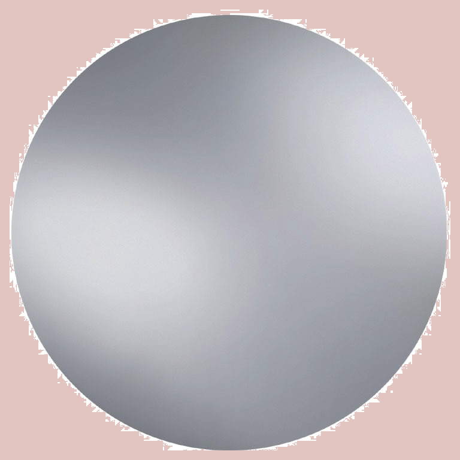

L'HISTOIRE DE 4+ C'EST D'ABORD LA PASSION
L’association 4+ est créée en 1986 par trois passionnés dont Bernard Lavollet, journaliste au service Infos à Vitry. Dans la même année elle est affiliée à la FSGT (Féderation sportive et Gymnique du travail) et participe à la manifestation «Foutez-nous la paix» organisé par l’ESV (Club Omnisport de Vitry-sur-Seine). Son but est de regrouper tous les passionnés d’escalade et de sensation pour faire découvrir les bonnes pratiques sportives en montagne et son aspect socio-culturel.
En peu de temps l’association recrute une vingtaine d’adhérents puis une trentaine... La suite logique voit le lancement du projet de construction d’un mur d’escalade à Vitry ce qui permettra à chacun de pouvoir pratiquer régulièrement l’escalade en milieu urbain et c’est aujourd’hui plus de 100 adhérents en Île-de-France qui peuvent dorénavant se retrouver la semaine en salle, les dimanches à Bleau et quelques fois par ans en falaise lors de sortie organisée par l'association.
L’association 4+ à pour but de regrouper et de faire découvrir les bonnes pratiques sportives en montagne et son aspects socio-culturels. De Promouvoir l'escalade pour tous et de développer l'escalade en milieu urbain et le respect de l'environnement.
UNE PREMIÈRE MONDIAL
Peu de temps le lancement du projet de construction du mur d'escalade de Vitry, des actions tout public sont menées avec des séances de découverte auprès des enfants de maternels, des retraités sportifs et des jeunes de l'ALEF pour une pratique de réinsertion.
L’un des membres de 4+ a participé avec la FSGT à l'aménagement d'une falaise pour les enfants, dans la banlieue nord de Marseille (13) ; événement mondial qui a connu un fort succès médiatique et qui a permis de faire parler de l’association.
UN MUR D’ESCALADE À VITRY-SUR-SEINE
La construction du mur d'escalade de Vitry-sur-Seine a pu voir le jour avec le soutien de la municipalité. Les adhérents ont maintenant un mur pour s’entrainer en ville.
Plusieurs expositions de photos d'escalade ont déjà eu lieu et continuent chaque année.
Un circuit d'initiation à été mis en place à Fontainebleau et l’association participe à de nombreuses actions pour la promotion et la gestion de différents sites d’escalade en Île-de-France. Des sorties communes entre 4+ et le club d'escalade "Flaine sup" de Haute Savoie sont organisées. Depuis 1992 l’association participe à de nombreuses compétitions interdépartemantale et régionale.
Pour promouvoir l’association un bulletin d'information " 4+ infos " a été créé avec la participation de Max Guidez, des pin's, tee-shirts, et affiches du club on également été réalisé et sont à disposition auprès des des organisateurs et à la salle de Vitry-sur-Seine.
